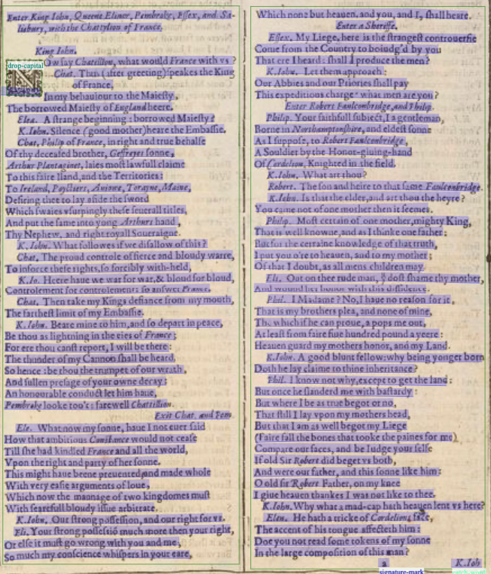
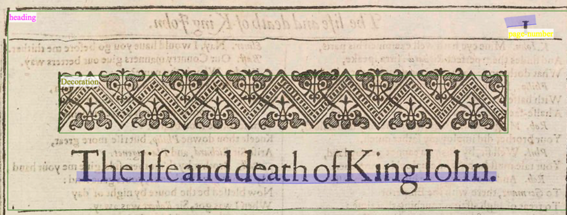
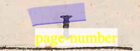
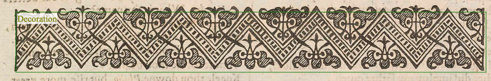
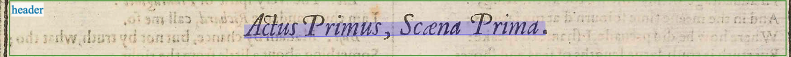
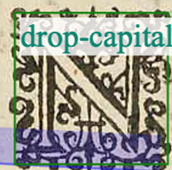
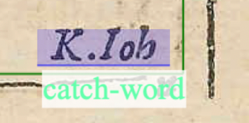
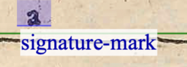

Annotation Pipeline
Task definition
Firstly, we specified what we wanted to do with our project and in this case, it was to furnish a ML model with an annotated corpus to use to train on another raw one for the evaluation phase. Our own training corpus was composed by two dramatic works of Shakespeare – The Twelfth Night and King John – for a total of 44 pages and more than 40000 words. The First Folio is available on the Bodleian Library site to be downloaded in different formats and in this case, we downloaded it as a set of images as it seemed the most appropriate for Transkribus .
The transcription of the two works is also available on the site; we employed it as a start for our own and merged it together with the standards (OCR-D: Ground Truth Guidelines ) used to better represent the text. We merged together our own little knowledge about printed text of the 16th century with the guidelines to further obtain a work that’d be loyal to its time.
We then set the work, Julius Caesar, as the validation set for our HTR model; similarly, to the previous plays it was available on The Bodleian First Folio site, both as a set of images and as a PDF for the transcription, which we also adapted to our own purpose.
As noted, we adapted the transcription to our own needs, even more about the structure of the different areas of text, as we had to find a common ground to properly represent them and to annotate the text to give it a formal look.
Pilot
We first decided to create a pilot on an individual work – The Twelfth Night, 20 pages and around 20000 words, to properly to segment out the layout ; we worked together through it to properly choose the most important and meaningful tags for the various parts of the text, adapt to a document of that specific époque (such as: catchword, signature mark or header).
We tried to solve any problematics that may arise through creating an annotation model on this first work till we were satisfied enough to apply it to the other work for the training corpus, King John. This has helped us further standardize our model to the specific guidelines chosen and adapted to our own needs and research.
Trancription Guidelines
To carry out the annotation campaign, we relied – as said above - on the OCR-D’s Ground Truth Guidelines, especially those listed in level 1. Listed below are the specific cases we encountered and the way we dealt with each one of them:
• Punctuation was left as found in the texts.
• The letter “u”, representing the sound /v/, was reproduced true to the original text.
• Upper and lower cases (majuscules/minuscules) were respected.
• Abbreviations were also transcribed according to the original text, not expanded.
• S-Graphemes: long-s were transcribed as round-s.
• Ligatures – common combinations of letters to form a new character – were transcribed as two individual letters . For instance: ae in Caesar.
• Hyphenation was transcribed according to the original .
• Distinction between I/J: “I” was employed.
Layout Analysis
We proceeded to manually segment the chosen documents into lines and text regions, careful to adjust the baselines when crooked, and to make sure two or more regions didn’t merge or overlap with one another. The text was divided in various areas accordingly to the guidelines, obtaining:
• Columns of text: two per page.

• Title (Heading).

• Page number.

• Decorations: found either at the top or bottom of the page, either in the beginning or end of the plays.

• Header .

• Drop-caps: the group found the drop capital tag trickier to use as it had to be marked by its own and consequently appears in its own line, separated from the rest of the word.

• Catch-words: placed at the foot of the page, one or two words that anticipate the first word of the following page .

• Signature marks: located below the print space, they state the sheet or the position in the book and thus they are used as a guideline for the realization of the correct sequence.
